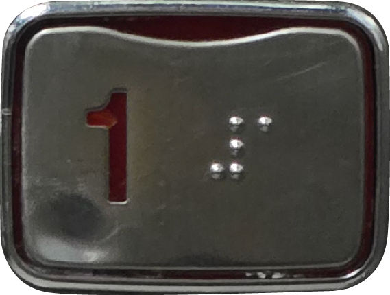

엘리베이터 버튼 색깔은 왜 주황색이나 녹색일까?
이에 대한 규격은 존재하지 않지만 많은 엘리베이터들이 주황색이나 녹색 버튼을 사용하고 있어요. 하지만 예상이 가지 않나요? 맞아요, 잘 보이기 때문에 관행적으로 사용되고 있답니다. 조금 더 자세히 살펴볼까요? 먼저 주황색(호박색 Amber)은 어두운 공간에서의 가시성이 좋기 때문에 설계되었습니다. 뿐만 아니라 시각장애인이어도 아예 시력을 상실한것이 아닌 저시력을 갖고 있기 때문에 앞을 보지 못하는 분들을 위한 설계이지요. 다음으로 초록색은 관용적으로 OK와 허용의 의미로 많이 쓰이기도 하고 최근에는 현대적인 Ui 트렌드로써 많이 사용되고 있어요. 우리학교에서도 다른 건물들의 버튼이 주황색인 반면에 비교적 최근 지어진 ‘50주년 기념관’의 버튼만 초록색인것을 발견할 수 있답니다.
엘리베이터 버튼은 몇번까지 누를 수 있을까?
하루에도 수십번 눌리는 엘리베이터 버튼은 사람들의 손길을 몇번까지 버틸 수 있을까요? 평균적으로 엘리베이터 버튼은 200,000회에서 500,000회의 사이클을 견디도록 설계됩니다. 일부 제조사에서는 3,000,000회 이상을 버티게도 설정하기도 해요. 닫힘버튼처럼 우리가 특히 많이 누르는 버튼의 경우 일반 버튼보다도 더 단단하게 설계되어있기도 합니다. 그럼에도 우리는 마모되어있는 버튼들을 쉽게 발견할 수 있어요.
닫힘버튼을 누르는것은 전기낭비일까?
내용